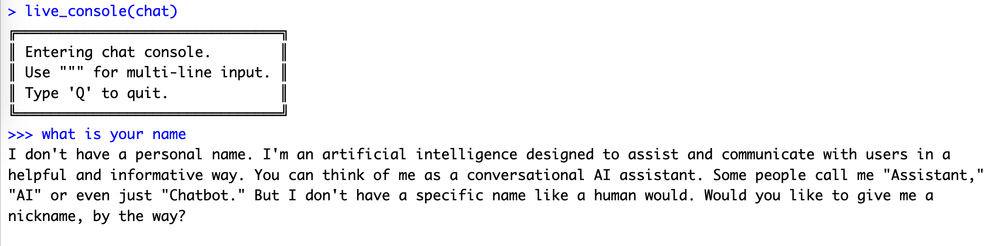

Code
#pak::pkg_install('ellmer')
library(ellmer)
library(keyring)run LLM model online with ellmer or chatter
#pak::pkg_install('ellmer')
library(ellmer)
library(keyring)chat_gemini_model=chat_gemini(
system_prompt = NULL,
turns = NULL,
base_url = "https://generativelanguage.googleapis.com/v1beta/",
api_key = key_get("google_ai_api_key"),
model = "gemini-2.0-flash",
api_args = list(),
echo = NULL
)
chat_gemini_modelchat_gemini_model$chat("Tell me three jokes about statisticians")library(ollamar)
ollamar::pull("llama3.1")ollamar::list_models()chat=chat_ollama(
system_prompt = NULL,
turns = NULL,
base_url = "http://localhost:11434",
model="llama3.1",
seed = NULL,
api_args = list(),
echo = NULL
)
chat$get_model()chat$chat("Tell me three jokes about statisticians")live_console(chat)
token_usage()#remotes::install_github("mlverse/chattr")library(chattr)Login at https://platform.openai.com/
Goto Settings (gear icon on top right)
Find API Keys from menu on left
Follow the process to Create new secret key
Copy your secret key (it will only show once so make sure you copy it)
Sys.setenv(OpenAI_API_KEY="sk-xxxxxxxx")#copilot do not need OpenAI_API_KEY
chattr_use("copilot")chattr_defaults(prompt = "{readLines(system.file('prompt/base.txt', package = 'chattr'))}")Do not use Copilot (GitHub) model for chattr(). Github will block this behavior.
# run
chattr_app(as_job = TRUE)Done!

#install.packages("usethis") # Install if not already installed
usethis::edit_r_profile().RProfile
#|eval: false
# Load chattr app after RStudio is fully loaded
setHook("rstudio.sessionInit", function(newSession) {
if (newSession) {
Sys.sleep(2) # Wait 2 seconds before starting chattr to ensure RStudio is ready
tryCatch({
library(chattr)
chattr_use("copilot")
#Sys.setenv("OPENAI_API_KEY" = "your-api-key-here")
chattr_defaults(prompt = "{readLines(system.file('prompt/base.txt', package = 'chattr'))}")
chattr_app(as_job = TRUE)
}, error = function(e)
message("Error starting chattr: ", e$message))
}
}, action = "append")pip install -q -U google-genaifrom google import genai
client = genai.Client(api_key=google_ai_key_py)
response = client.models.generate_content(
model="gemini-2.0-flash", contents="Explain how AI works in a few words"
)
print(response.text)https://github.com/posit-dev/chatlas
pip install -U chatlasfrom chatlas import ChatGoogle
from chatlas import ChatOllama
from chatlas import token_usage
import keyringfrom chatlas import ChatGoogle
chat_google_model = ChatGoogle(
model = "gemini-2.0-flash",
api_key=keyring.get_password("system", "google_ai_api_key"),
system_prompt = "You are a whisky expert",
)
chat_google_modelchat_google_model.chat("translate following whisky tasting note to English:微酸，脏麦芽。菲特肯还是要找1988")from chatlas import ChatOllama
chat_llama_model = ChatOllama(
model="llama3.2",
#api_key=keyring.get_password("system", "google_ai_api_key"),
system_prompt = "You are a whisky expert",
)
chat_llama_modelchat_llama_model.chat("translate following whisky tasting note to English:微酸，脏麦芽。菲特肯还是要找1988")token_usage()